Prüfung üben: Bund & Land
662 eigene Übungsfragen zu Demokratie, Geschichte Österreichs und deinem Bundesland – mit Mehrfachauswahl wie im Test und Erklärungen in sechs Sprachen.
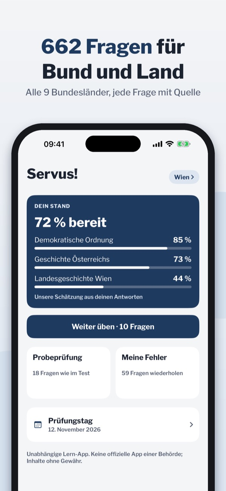
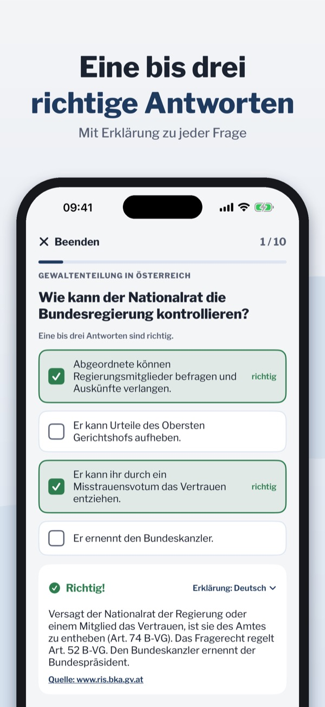
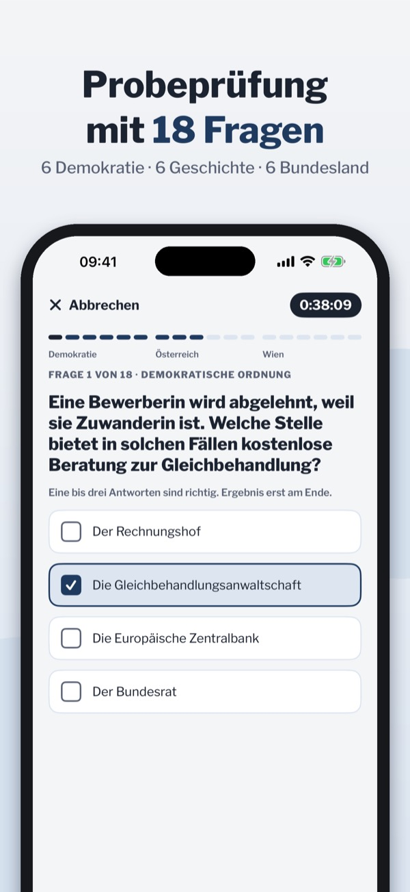
Bereite dich auf den schriftlichen Staatsbürgerschaftstest in Österreich vor: Demokratie, Geschichte Österreichs und die Geschichte deines Bundeslandes. Für alle neun Bundesländer: Wien, Niederösterreich, Oberösterreich, Steiermark, Salzburg, Tirol, Vorarlberg, Kärnten und Burgenland.
Fragen und Antworten bleiben auf Deutsch, wie im Test. Erklärungen, Zusammenfassungen und Karteikarten gibt es auf Deutsch, Englisch, Türkisch, Bosnisch/Kroatisch/Serbisch, Arabisch und Ukrainisch.
Termin eintragen, Erinnerung am Vortag, Checkliste und die offiziellen Informationen deines Bundeslandes.
Eine vollständige Probeprüfung kannst du ohne Kauf machen. Die Vollversion schaltet alle Fragen, unbegrenzte Probeprüfungen, Karten und Zusammenfassungen für alle neun Bundesländer frei. Funktioniert offline, ohne Konto.
Die App ist nur für den österreichischen Staatsbürgerschaftstest gedacht, nicht für Einbürgerungstests in Deutschland oder der Schweiz.
Hinweis: Staatsbürgerschaft AT ist eine unabhängige Lern-App und keine offizielle App des Bundes, eines Landes oder einer Behörde. Alle Fragen sind eigene Formulierungen mit Quellenangabe; Angaben ohne Gewähr.
Terms of Use (EULA): https://www.apple.com/legal/internet-services/itunes/dev/stdeula/
Privacy: https://baytechbv.github.io/privacy/staatsbuergerschaft-at/
Practise federal & state exam
662 practice questions on democracy, Austrian history and your federal state – multiple choice like the real test, explanations in six languages.
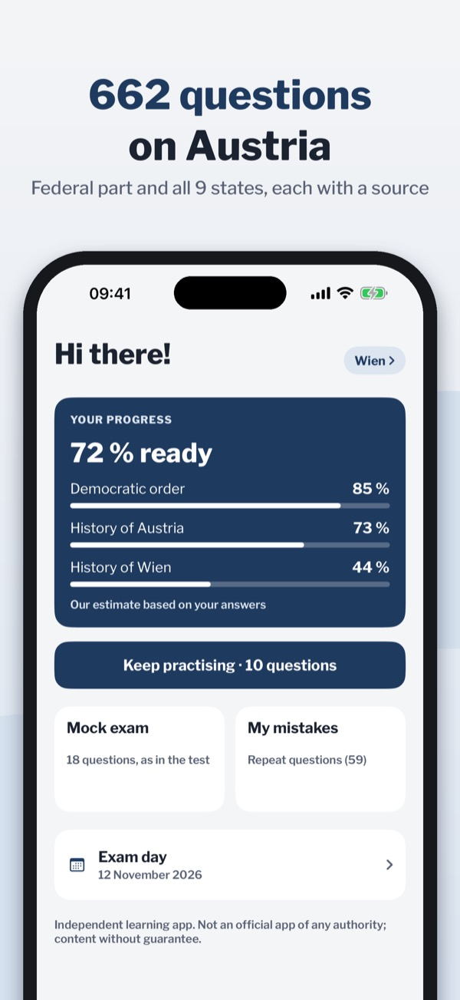
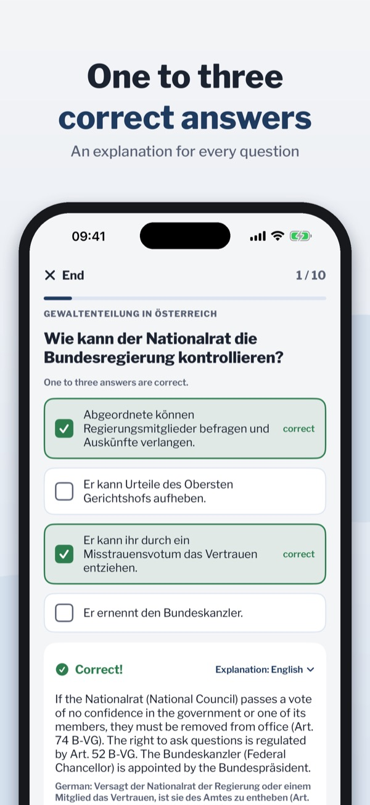
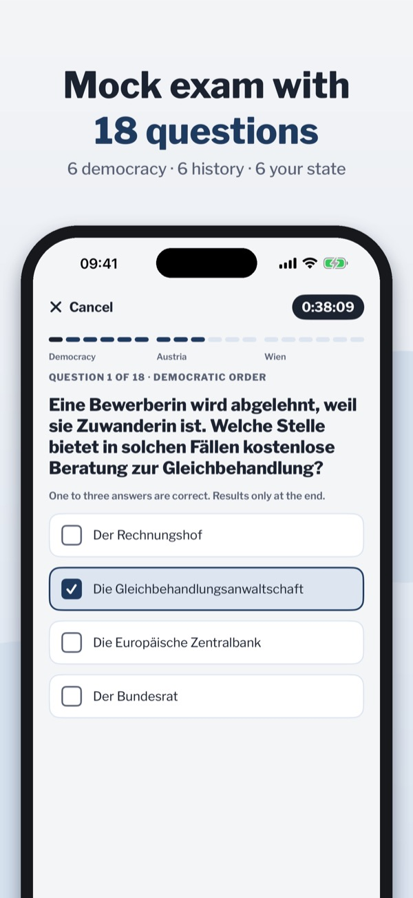
Prepare for the written Austrian citizenship test (Staatsbürgerschaftstest): democracy, the history of Austria and the history of your federal state (Bundesland). For all nine states: Vienna, Lower Austria, Upper Austria, Styria, Salzburg, Tyrol, Vorarlberg, Carinthia and Burgenland.
Questions and answers stay in German, as in the test. Explanations, summaries and flashcards are available in German, English, Turkish, Bosnian/Croatian/Serbian, Arabic and Ukrainian.
Save your date, get a reminder the day before, a checklist and the official information of your Bundesland.
You can take one complete mock exam without buying. The full version unlocks all questions, unlimited mock exams, cards and summaries for all nine states. Works offline, no account.
The app is only for the Austrian citizenship test, not for naturalisation tests in Germany or Switzerland.
Note: this is an independent study app, not an official app of the Austrian government, a federal state or any authority. All questions are our own wording with sources; no guarantee.
Terms of Use (EULA): https://www.apple.com/legal/internet-services/itunes/dev/stdeula/
Privacy: https://baytechbv.github.io/privacy/staatsbuergerschaft-at/
Avusturya vatandaşlık testi
Demokrasi, Avusturya tarihi ve eyaletinin tarihi üzerine 662 alıştırma sorusu – sınavdaki gibi çoklu seçim, altı dilde açıklamalar.
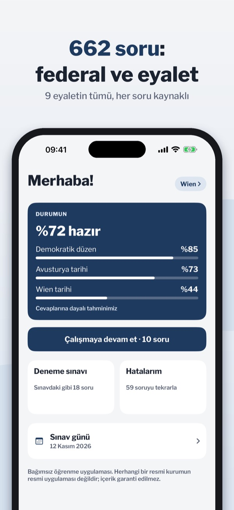
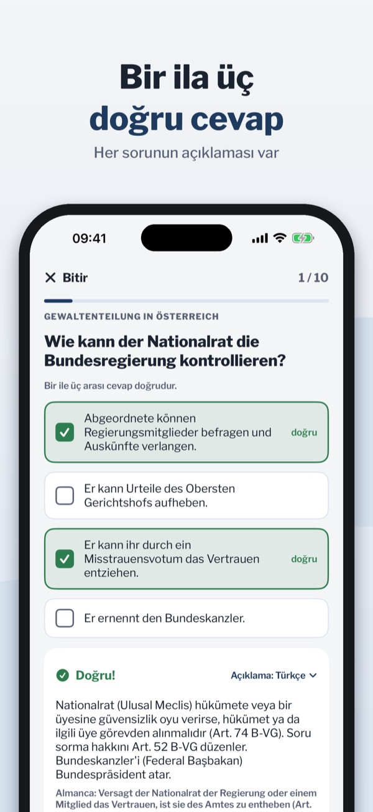
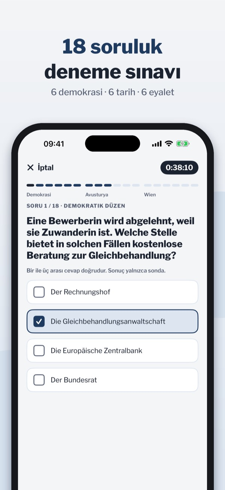
Avusturya'daki yazılı vatandaşlık sınavına (Staatsbürgerschaftstest) hazırlan: demokrasi, Avusturya tarihi ve eyaletinin (Bundesland) tarihi. Dokuz eyaletin hepsi için: Viyana, Aşağı Avusturya, Yukarı Avusturya, Steiermark, Salzburg, Tirol, Vorarlberg, Kärnten ve Burgenland.
Sorular ve cevaplar sınavdaki gibi Almanca kalır. Açıklamalar, özetler ve kartlar Almanca, İngilizce, Türkçe, Boşnakça/Hırvatça/Sırpça, Arapça ve Ukraynaca.
Tarihini kaydet, bir gün önce hatırlatma al; kontrol listesi ve eyaletinin resmî bilgileri.
Satın almadan bir tam deneme sınavı yapabilirsin. Tam sürüm tüm soruları, sınırsız deneme sınavını, kartları ve özetleri dokuz eyaletin hepsi için açar. İnternetsiz çalışır, hesap gerekmez.
Uygulama yalnızca Avusturya vatandaşlık sınavı içindir; Almanya veya İsviçre'deki vatandaşlık testleri için değildir.
Not: Bu bağımsız bir öğrenme uygulamasıdır; Avusturya devletinin, bir eyaletin ya da bir makamın resmî uygulaması değildir. Tüm sorular kaynak gösterilerek kendi ifadelerimizle yazılmıştır; bilgiler garanti edilmez.
Terms of Use (EULA): https://www.apple.com/legal/internet-services/itunes/dev/stdeula/
Privacy: https://baytechbv.github.io/privacy/staatsbuergerschaft-at/
Austrijsko državljanstvo: test
662 pitanja za vježbu o demokraciji, povijesti Austrije i tvoje savezne zemlje – višestruki izbor kao na testu, objašnjenja na šest jezika.
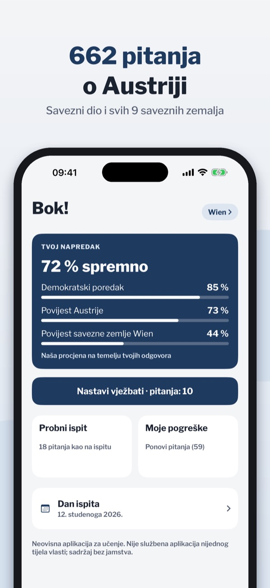
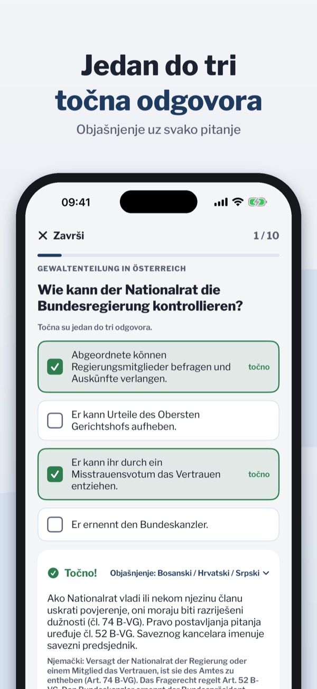
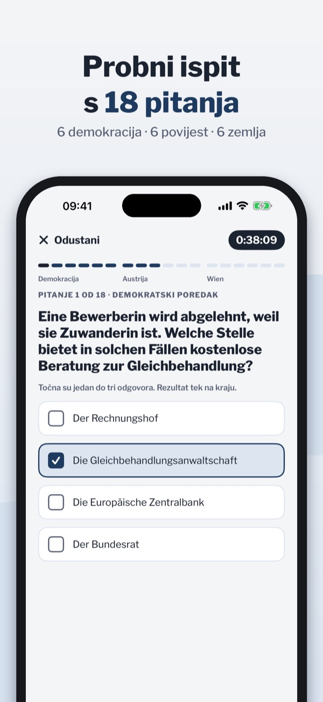
Pripremi se za pismeni test za austrijsko državljanstvo (Staatsbürgerschaftstest): demokracija, povijest Austrije i povijest tvoje savezne zemlje (Bundesland). Za svih devet saveznih zemalja: Beč, Donju Austriju, Gornju Austriju, Štajersku, Salzburg, Tirol, Vorarlberg, Korušku i Gradišće.
Pitanja i odgovori ostaju na njemačkom, kao na testu. Objašnjenja, sažeci i kartice dostupni su na njemačkom, engleskom, turskom, bosanskom/hrvatskom/srpskom, arapskom i ukrajinskom.
Upiši datum, podsjetnik dan prije, popis za provjeru i službene informacije tvoje savezne zemlje.
Jedan cijeli probni ispit možeš riješiti bez kupnje. Puna verzija otključava sva pitanja, neograničene probne ispite, kartice i sažetke za svih devet saveznih zemalja. Radi bez interneta, bez računa.
Aplikacija je samo za austrijski test za državljanstvo, ne za testove u Njemačkoj ili Švicarskoj.
Napomena: ovo je neovisna aplikacija za učenje, a ne službena aplikacija Austrije, savezne zemlje ili nekog tijela. Sva pitanja su naša vlastita formulacija s izvorima; bez jamstva.
Terms of Use (EULA): https://www.apple.com/legal/internet-services/itunes/dev/stdeula/
Privacy: https://baytechbv.github.io/privacy/staatsbuergerschaft-at/
اختبار الجنسية النمساوية
662 سؤالاً للتدريب عن الديمقراطية وتاريخ النمسا وتاريخ ولايتك – اختيار متعدد كما في الاختبار، وشروح بست لغات.
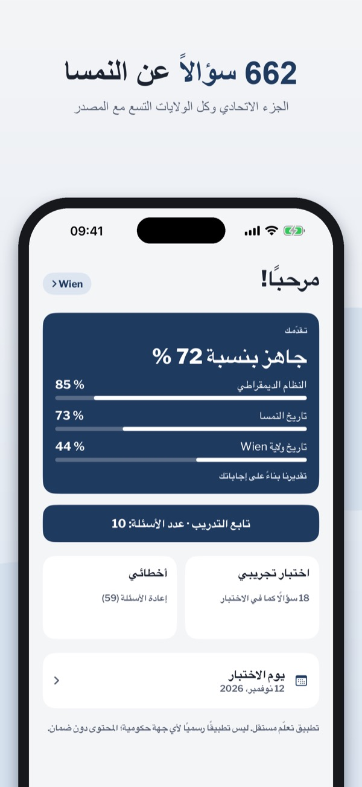
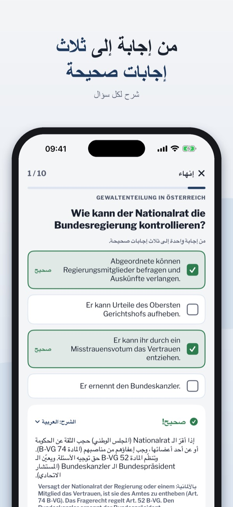
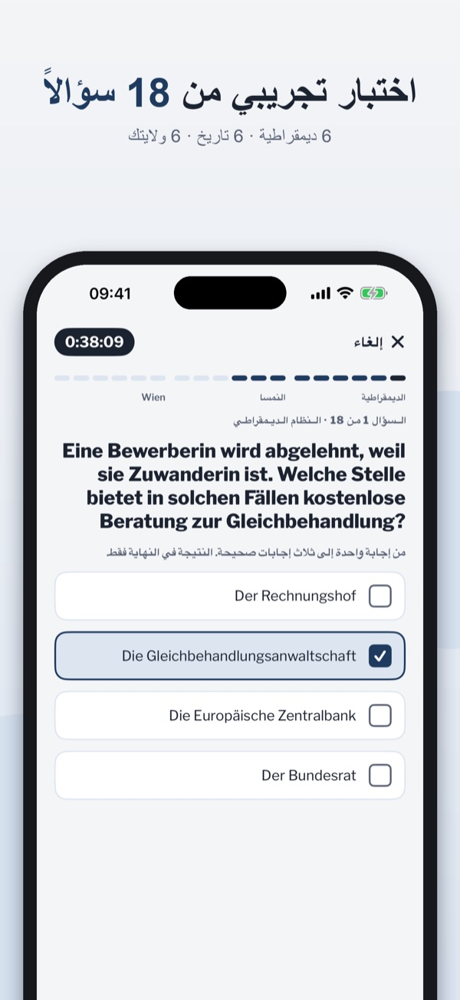
استعد لاختبار الجنسية النمساوية الكتابي (Staatsbürgerschaftstest): الديمقراطية وتاريخ النمسا وتاريخ ولايتك (Bundesland). متوفر لكل الولايات التسع: فيينا والنمسا السفلى والنمسا العليا وشتايرمارك وسالزبورغ وتيرول وفورارلبرغ وكيرنتن وبورغنلاند.
تبقى الأسئلة والإجابات بالألمانية كما في الاختبار. الشروح والملخصات والبطاقات متوفرة بالألمانية والإنجليزية والتركية والبوسنية/الكرواتية/الصربية والعربية والأوكرانية.
سجّل موعدك، وتذكير قبل يوم، وقائمة مراجعة، والمعلومات الرسمية لولايتك.
يمكنك إجراء اختبار تجريبي كامل واحد دون شراء. تفتح النسخة الكاملة كل الأسئلة والاختبارات التجريبية غير المحدودة والبطاقات والملخصات لكل الولايات التسع. يعمل دون إنترنت ودون حساب.
التطبيق مخصص فقط لاختبار الجنسية النمساوية، وليس لاختبارات التجنيس في ألمانيا أو سويسرا.
ملاحظة: هذا تطبيق تعليمي مستقل، وليس تطبيقاً رسمياً للنمسا أو لأي ولاية أو جهة حكومية. كل الأسئلة بصياغتنا مع ذكر المصادر؛ دون ضمان.
Terms of Use (EULA): https://www.apple.com/legal/internet-services/itunes/dev/stdeula/
Privacy: https://baytechbv.github.io/privacy/staatsbuergerschaft-at/
Тест на громадянство Австрії
662 питань для тренування про демократію, історію Австрії та твоєї федеральної землі – множинний вибір, як на тесті, пояснення шістьма мовами.
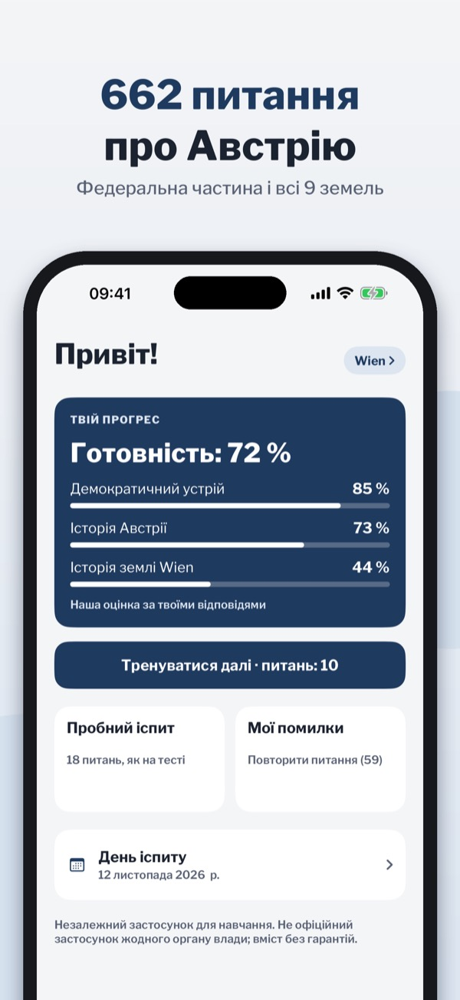
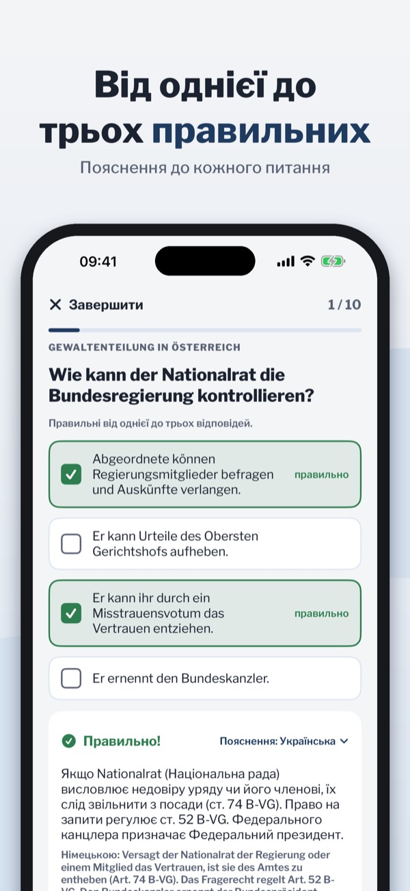
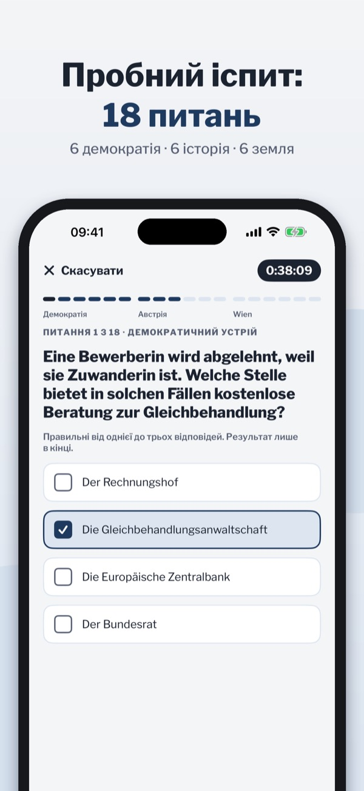
Підготуйся до письмового тесту на австрійське громадянство (Staatsbürgerschaftstest): демократія, історія Австрії та історія твоєї федеральної землі (Bundesland). Для всіх дев'яти федеральних земель: Відня, Нижньої Австрії, Верхньої Австрії, Штирії, Зальцбурга, Тіролю, Форарльберга, Каринтії та Бургенланду.
Питання й відповіді залишаються німецькою, як на тесті. Пояснення, конспекти й картки доступні німецькою, англійською, турецькою, боснійською/хорватською/сербською, арабською та українською.
Збережи дату, нагадування напередодні, чек-лист і офіційна інформація твоєї землі.
Один повний пробний іспит можна скласти без покупки. Повна версія відкриває всі питання, необмежені пробні іспити, картки й конспекти для всіх дев'яти земель. Працює офлайн, без облікового запису.
Застосунок лише для австрійського тесту на громадянство, не для тестів у Німеччині чи Швейцарії.
Примітка: це незалежний навчальний застосунок, а не офіційний застосунок Австрії, федеральної землі чи будь-якого органу влади. Усі питання сформульовані нами з джерелами; без гарантії.
Terms of Use (EULA): https://www.apple.com/legal/internet-services/itunes/dev/stdeula/
Privacy: https://baytechbv.github.io/privacy/staatsbuergerschaft-at/